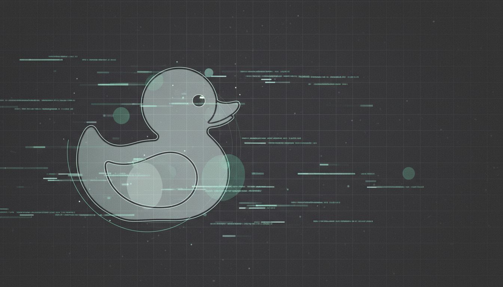

const duck = new RubberDuck();duck.listen(problem);trace.stack().filter(signal);if (confused) explain(out_loud);return plan.nextStep();debugger;console.log('aha moment...');assert.equal(got, expected);catch (e) { log(e.stack); }process.env.DEBUG = '*'heap.snapshot().analyze();git diff HEAD~1 --statnpm run debug:verbosegrep -r 'undefined' ./srccurl -v http://localhost:3000SELECT * FROM logs LIMIT 50;docker logs --tail 200 appstrace -e trace=network -p $PIDtcpdump -i any port 8080breakpoint.set(line, 42);

booting session...
> RubberDuck.debug()
Explain the bug. Follow the path. Ship the fix.
duck@debug:~$ ./start-session.sh
$ describe issue --env production
> analysing stack trace...
$ git log --oneline -10
> narrowing root cause...
$ strace -p $PID
> check▌
rubber duck debugging as a service · v0.1.0-mvp